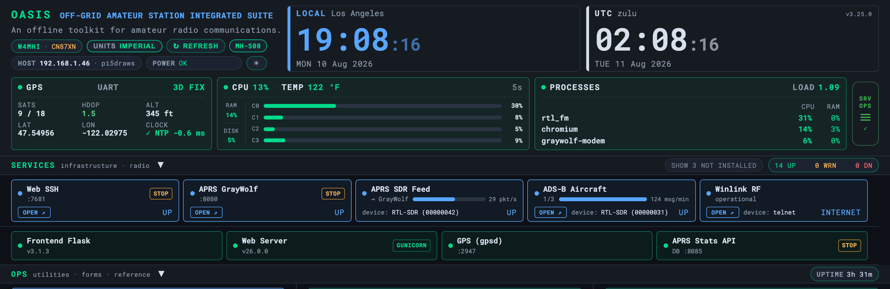
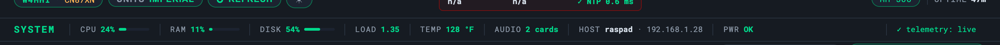

The Dashboard
System Monitor
Live host health — CPU, RAM, disk, temperature, and Pi power-throttle status
The System Monitor cards in the dashboard header report the health of the host,
refreshed every 30 seconds and colour-coded so a problem is obvious at a glance.
The data comes from psutil on the server; nothing leaves the Pi.


| Metric | What it shows |
|---|---|
| CPU % | Processor load, with a colour ramp as it climbs |
| RAM | Used / total memory |
| Disk | Free space on the SD card / disk |
| Load | System load average |
| Temperature | SoC temperature — watch this in an enclosure or full sun |
| Throttle | Pi power-throttle / under-voltage status |
| Uptime | Time since last boot |
| IP | The address to reach the dashboard on (e.g. 10.42.0.1 in AP mode) |
| Audio / Network | Detected audio devices and Wi-Fi SSID / connected clients |
ℹ
Under-voltage (a lightning-bolt throttle flag) is the most common field gremlin — it points at the power supply or cable, not the Pi. A GPS or SDR dongle browning out the 5 V rail shows up here first.
✓
The same checks are available headless over SSH with doctor.py — handy when no browser is at hand.
Troubleshooting
| Symptom | Cause & fix |
|---|---|
| TEMP is red / the Pi throttles | Thermal throttling. Improve cooling (the RGB Cooling HAT helps) and check vcgencmd get_throttled (non-zero = throttled now or since boot). |
A value shows n/a | Telemetry stalled. Hard-refresh; confirm /api/server-info answers on :8083. |
| HDOP is red | Poor GPS geometry, not a fault — see the GPS card. It clears as more satellites lock. |
| DISK near full | Large data (maps, ZIMs, recordings) fills the card. Move them to external storage or prune; OASIS itself is tiny. |
OASIS · off-grid amateur station information suite